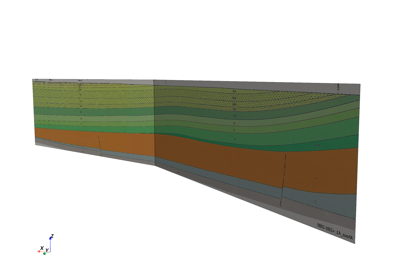
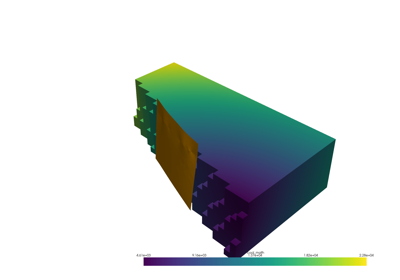
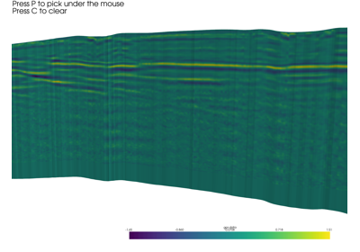
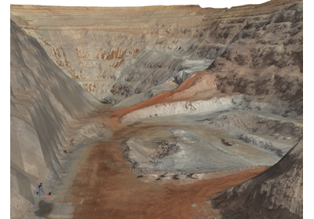
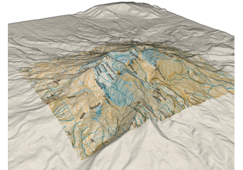
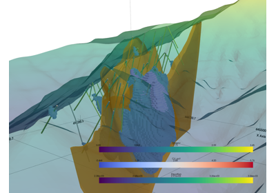

Examples
There are tons of excellent examples in PyVista’s gallery, but here are some additional examples more geared towards geoscientists.
Many of these examples have made their way into the main PyVista docs, but I still host them here to have a complete list of geoscientific examples.
Please feel free to use and extend these examples. I simply ask that you please give me and the PyVista Developers a shout out / some form of acknowledgment ;)

Drape 2D Surface From Line

Geological Cross Section



Masked Grid for Two Sides of a Fault
Masked Grid for Two Sides of a Fault
Geological Map on Topography

Picking Horizons


Mine Pit Imagery


Surface Boolean Logic
Terrain Following Mesh

Topographic Map


Load OMF Project